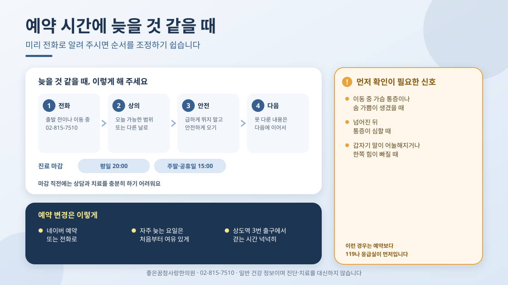
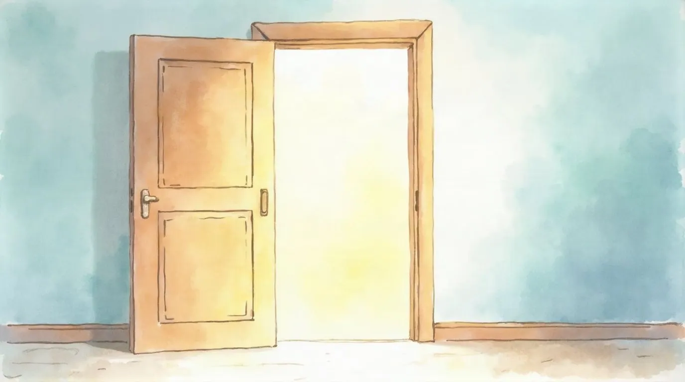

예약 시간보다 늦을 것 같으면 출발 전이나 이동 중에 02-815-7510으로 미리 알려 주시면 순서를 조정하기 쉽고, 진료 마감 시각에 가까운 경우에는 다른 시간으로 바꾸는 편이 편할 수 있습니다.
여쭙는 것
- 몇 분쯤 늦을 것 같으신가요?
- 오늘 꼭 받아야 하는 진료인가요?
- 다른 날로 바꿔도 괜찮으신가요?
생활에서 해 볼 것
- 늦을 것 같으면 바로 전화로 알리기
- 평일 저녁은 마감 20:00, 주말은 15:00을 기억하기
- 상도역 3번 출구에서 걸어오는 시간을 넉넉히 잡기
한의원에서 함께 살필 것
- 늦게 오셔도 오늘 가장 불편한 곳부터 먼저 여쭙습니다.
- 시간이 부족한 날은 다음 방문에 이어서 살필 것을 정해 둡니다.
- 자주 늦어지는 경우 생활에 맞는 요일과 시간을 함께 찾습니다.
먼저 확인이 필요한 신호
- 이동 중 가슴 통증이나 숨 가쁨이 생긴 경우
- 넘어진 뒤 통증이 심한 경우
- 갑자기 말이 어눌해지거나 한쪽 힘이 빠진 경우

퇴근이 늦어지거나 지하철이 지연되면 예약 시간을 맞추기 어려울 때가 있습니다. 그럴 때 연락 없이 늦으면 다른 분들의 순서와 겹칠 수 있어, 미리 한 통 알려 주시는 것이 서로에게 가장 편합니다.
예를 들어 평일 저녁 7시 예약인데 7시 40분에 도착하실 것 같다면, 8시 마감까지 남은 시간이 짧아 상담과 치료를 모두 하기 어려울 수 있습니다. 이럴 때는 미리 전화를 주시면 오늘 가능한 범위를 말씀드리거나 다른 날로 옮기는 방법을 함께 정할 수 있습니다.
왜 미리 알려 주시면 좋을까요
- 다른 예약과 순서를 조정할 시간을 벌 수 있습니다.
- 진료 마감 시각에 가까우면 충분히 상담하기 어려울 수 있습니다.
- 급하게 뛰어오다 넘어지는 일을 줄일 수 있습니다.
- 다른 날로 바꾸는 편이 더 여유로울 수 있습니다.
- 예약 없이 기다리시는 분들과 순서가 겹치면 대기 시간이 더 길어질 수 있습니다.

먼저 이렇게 여쭙니다
- 몇 분쯤 늦을 것 같으신가요?
- 오늘 꼭 받아야 하는 진료인가요?
- 다른 날로 바꿔도 괜찮으신가요?
- 어디에서 출발하시나요?
일상에서 먼저 해 볼 수 있는 것
- 늦을 것 같으면 바로 전화로 알리기
- 평일 저녁은 마감 20:00, 주말은 15:00을 기억하기
- 상도역 3번 출구에서 걸어오는 시간을 넉넉히 잡기
- 급하게 뛰지 말고 안전하게 오기
- 자주 늦어지는 요일이라면 예약 시간을 처음부터 여유 있게 잡기

한의원에서 함께 살필 수 있는 경우
- 늦게 오셔도 오늘 가장 불편한 곳부터 먼저 여쭙습니다.
- 시간이 부족한 날은 다음 방문에 이어서 살필 것을 정해 둡니다.
- 자주 늦어지는 경우 생활에 맞는 요일과 시간을 함께 찾습니다.
좋은꿈참사랑한의원에서는 짧은 시간이라도 지난번 이야기와 오늘 가장 불편한 점부터 여쭙고, 필요하다고 판단될 때 진찰과 치료를 진행합니다. 다 다루지 못한 내용은 다음 방문에서 이어서 살핍니다.
헷갈리기 쉬운 점
조금 늦는다고 진료를 못 받는 것은 아니지만, 마감 직전에는 상담과 치료를 충분히 하기 어렵습니다. 늦을 것 같은 날은 오늘 꼭 필요한 것만 받고 나머지는 다음에 이어 가는 방법도 있습니다.

이렇게 기록해 오시면 상담이 쉬워집니다
- 오늘 가장 불편한 점 한 가지
- 지난 방문 뒤 달라진 점
- 다음에 오실 수 있는 요일과 시간
- 복용 중인 약의 변화
- 주로 늦어지는 요일과 이유
이런 증상은 먼저 확인이 필요합니다
- 이동 중 가슴 통증이나 숨 가쁨이 생긴 경우
- 넘어진 뒤 통증이 심한 경우
- 갑자기 말이 어눌해지거나 한쪽 힘이 빠진 경우
이런 경우는 예약보다 119나 응급실이 먼저입니다. 복용 중인 약은 처방한 의사와 상의 없이 줄이거나 끊지 않습니다.
한눈에 보는 표
| 구분 | 핵심 |
|---|---|
| 여쭙는 것 | 몇 분쯤 늦을 것 같으신가요? 오늘 꼭 받아야 하는 진료인가요? |
| 생활에서 해 볼 것 | 늦을 것 같으면 바로 전화로 알리기 평일 저녁은 마감 20:00, 주말은 15:00을 기억하기 |
| 한의원에서 함께 살필 것 | 늦게 오셔도 오늘 가장 불편한 곳부터 먼저 여쭙습니다. 시간이 부족한 날은 다음 방문에 이어서 살필 것을 정해 둡니다. |
| 먼저 확인이 필요한 신호 | 이동 중 가슴 통증이나 숨 가쁨이 생긴 경우 넘어진 뒤 통증이 심한 경우 |
자주 묻는 질문
몇 분까지 기다려 주나요?
상황마다 달라 전화로 알려 주시면 가능한 방법을 안내해 드립니다.
예약을 바꾸려면요?
네이버 예약이나 전화로 변경하실 수 있습니다.
전화번호가 뭔가요?
02-815-7510입니다.
연락 없이 못 가면 어떻게 되나요?
다음 예약을 다시 잡으시면 됩니다. 가능하면 미리 알려 주시면 다른 분들께도 도움이 됩니다.
이 글은 일반적인 건강 정보이며 개인의 진단이나 치료를 대신하지 않습니다. 증상이 있거나 복용 중인 약이 있다면 진료를 통해 확인하세요. 치료 효과는 개인마다 다를 수 있습니다.
작성 기준: 일반적으로 알려져 있는 건강 정보를 참고해 정리했습니다(대표원장 감수). 증상 기록은 1~2주 동안 하루 1회, 비슷한 시간에 적어 오시면 지난 상태와 비교하기 쉽습니다.
좋은꿈참사랑한의원은 재진 때 지난번 이야기부터 이어서 여쭙니다. 진료시간과 예약은 오시는 길에서 확인하세요.